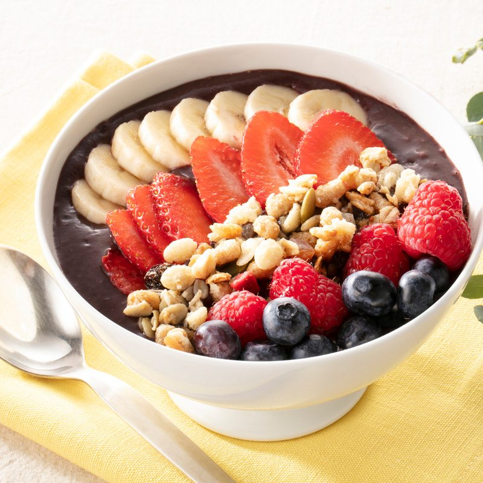
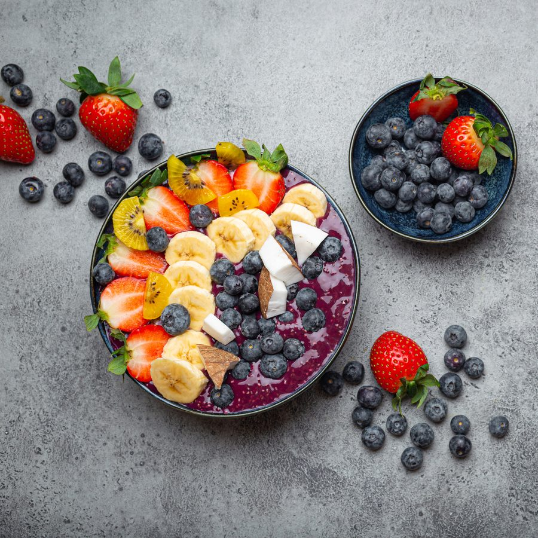
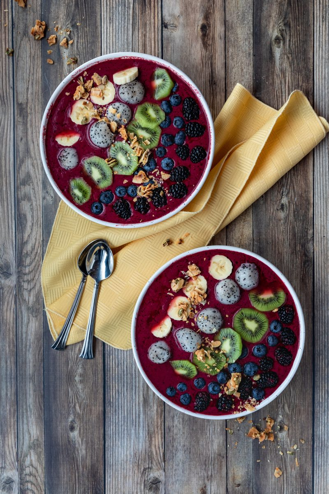
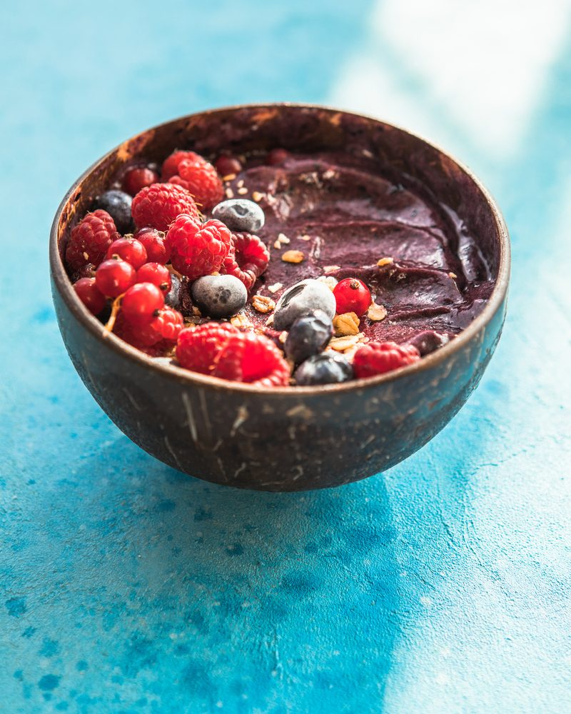

Serving suggestions
The açaí bowl at home
An açaí bowl at home starts with a 2/3 cup scoop of sorbet. These are serving suggestions, not recipes: the sorbet is ready to eat, no blender, and the toppings are yours.

How to make an açaí bowl with sorbet
- 1
Scoop
Take the pint from the freezer and scoop 2/3 cup (147 g) of sorbet into a bowl. No blender.
- 2
Top
Add the toppings: granola, sliced banana, strawberry and coconut, as much of each as you like.
- 3
Serve
Serve at once, frozen. Seal the pint and put it back in the freezer at 0 °F (−18 °C) or below.

Serving suggestions
Three bowls to start from
-

Two bowls, one pint
Kiwi, banana, blackberries, blueberries and granola. A pint makes about three scoops.
-

Berries and granola
Raspberries, blueberries and a handful of granola, in a coconut shell bowl.
-

A scoop, toppings on the side
Serve the sorbet in a ramekin with the toppings in small bowls, and let everyone add their own.

Serving suggestions.
Toppings
Four toppings on the bar
The same four toppings as the foodservice bowl program. Toppings, not ingredients: the sorbet is what is in the pint.
Granola
For crunch. A handful over the scoop.
Banana
Sliced, laid over the top.
Strawberry
Halved or sliced.
Coconut
Shredded or flaked, a pinch to finish.
More ways to serve
Split-flavor bowls, smoothies and the cup
Split-flavor bowl
Two sorbets in one bowl: a scoop of açaí beside a scoop of a fruit sorbet, then the toppings. Any two of the ten flavors.
Smoothies, shakes and desserts
Serve as a ready-to-eat frozen dessert, or use in smoothies, shakes and dessert recipes. Add fresh fruit and toppings if desired. Ready to eat: no preparation required. Serve frozen.
Grab'n Go, no bowl needed
The 250 mL cup comes with a wooden spoon under the lid. One serving, straight from the freezer.
Bases
Pick a base for the bowl
-

-

-

-

-

-

-

-

-

-

For foodservice
The same bowl, scaled: about 69 bowls a 10.2 kg bucket, no blender.
The bowl program